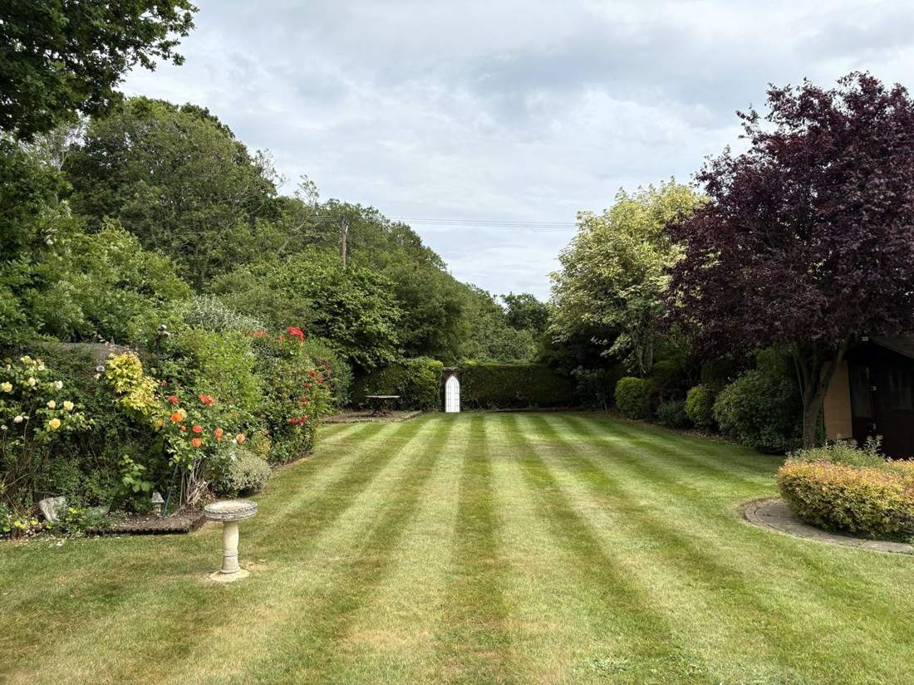

Hedge cutting in Chelmsford
Maintenance cuts, height reductions and reshaping for hedges and shrubs, with every cutting taken away.
- 5-star rated on Google
- Fully insured
- Photo report every visit
- Licensed waste carrier
A neatly cut hedge makes the whole garden look cared for. A neglected one blocks light, takes over paths and causes friction with neighbours. We cut hedges of all sizes, from low box borders to tall conifer and laurel screens.
What we do
- Regular maintenance cuts to keep hedges neat and dense
- Height and width reductions for overgrown hedges
- Reshaping of shrubs and ornamental hedges
- Cutting back from paths, driveways and boundaries
- All cuttings cleared and taken away. We leave the garden tidier than we found it.
Nesting birds
We time cuts around the nesting season. Disturbing an active nest is an offence in the UK, so from March to August we check hedges carefully before cutting and hold off heavy work where birds are nesting. Late summer, autumn and winter are the best times for larger reductions.
One-off or regular
Most hedges need cutting once or twice a year. We can add hedge cutting to a regular maintenance round, or do it as a one-off job.
Areas we cover
We're based just outside Chelmsford and work across Chelmsford, Great Waltham, Broomfield, Writtle, Great Baddow, Springfield, Danbury, Boreham, Little Waltham, Witham, Maldon and South Woodham Ferrers. For larger jobs and commercial contracts we also cover the rest of Essex and East London.

Frequently asked questions
When is the best time to cut a hedge?
Most hedges are best cut from late summer into autumn. Heavy cutting is best avoided from March to August while birds may be nesting.
How much does hedge cutting cost?
It depends on length, height and access. We give a free, fixed quote, often from photos sent on WhatsApp.
Do you take the cuttings away?
Yes, all cuttings are removed and disposed of under our Upper Tier waste carrier registration, CBDU656246.
Can you reduce a very tall hedge?
Yes. We carry out height and width reductions on overgrown hedges, and will advise how far a particular hedge can safely be cut back.